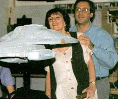
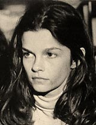
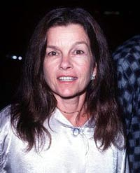
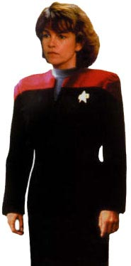

No segundo semestre de 1994, durante o perodo de pr-produo de
Voyager, srie que lanaria a UPN, novo canal de televiso da Paramount, os produtores Rick Berman, Michael Piller e Jeri Taylor estavam
caa de uma atriz que pudesse personificar a capit Nicole Janeway, comandante da USS Voyager, uma nave que se perderia em um setor distante da galxia e passaria a srie toda tentando retornar para casa.

Depois de dezenas de audies com diversas atrizes, aparentemente a intrprete de Janeway havia sido escolhida por Jeri Taylor. Seria a atriz franco-canadense Genevive Bujold, ento com 52 anos, j indicada ao Oscar e com uma grande bagagem na rea da atuao. "Eu j havia visto seu trabalho no cinema e convidei-a para uma audio. Tinha certeza de que era a pessoa correta para o papel, vide seus trabalhos anteriores, cheios de paixo e intensidade", conta Jeri. "Porm ela revelou que no fazia audies, no era a maneira como trabalhava. E assim foi contratada, pelo nosso instinto de que daria certo."
Winrich Kolbe, o diretor do episdio-piloto "Caretaker", advertiu que talvez Bujold no estivesse muito por dentro de como funcionaria fazer uma srie semanal de televiso, j que a atriz havia construdo toda a sua carreira no cinema. Sabendo do rigor de horrios e do planejamento sempre pr-estabelecido e modificado em cima da hora, Kolbe ficou receoso quanto a produtividade da atriz. Rick Berman chamou Genevive em seu escritrio e explicou exatamente como funcionava o processo, e ela ficou de pensar melhor antes de dar uma resposta definitiva. E deu, dias depois. Genevive estava dentro e a srie comearia a ser filmada.
O primeiro encontro do recm-selecionado elenco foi em um tour comandado por Winrich Kolbe pelos cenrios da nova srie. Garret Wang, o alferes Harry Kim, disse que "Genevive era muito reservada e nunca falava nada. Sua presena era fria e cordial apenas". Porm Bujold, tentando se aproximar de seus novos colegas, distribuiu flores para todo o elenco e produo no primeiro dia de gravaes. Mesmo assim havia uma certa tenso no ar durante as filmagens. Genevive havia desistido de tentar aproximaes com os outros atores depois do primeiro dia e tudo andava muito quieto, algo nada normal para Wang. "Ela fazia suas cenas e depois sumia em seu trailer", conta o ator.

Alguns dias depois de iniciadas as filmagens, mais precisamente em uma sexta-feira, Genevive aproximou-se do diretor Kolbe e disse que no queria ser a capit Janeway arrojada e decidida, como pedia na "bblia" da srie. Ela queria interpret-la como se fosse exatamente uma cientista, apoiada na lgica e com atos friamente pensados. Bujold disse ainda que aquela Janeway parecia um personagem de desenho animado e ela no queria ser um cartoon. Queria ser Genevive Bujold.
Kolbe explicou que a capit era de fato uma cientista, mas como comandante da nave tinha muitas obrigaes e deveria mostrar um pulso firme, uma personalidade decidida e objetiva, mas com emoo e intensidade. Devia ser algo "alm da vida", como todos os protagonistas das sries de
Jornada foram. Nessa mesma sexta-feira, l pela hora do almoo, aconteceu o que muitos j estavam prevendo. Bujold aproximou-se mais uma vez de Kolbe e disse que no estava se sentindo bem fazendo o papel de Janeway e iria largar tudo. Segundo Kolbe, sua reao foi de pedir que ela no dissesse isso na frente da equipe de produo e resolveu ento fazer uma pausa para almoo e decidir que atitude tomar. "Veja bem", conta Kolbe, "h muita, mas muita presso sobre a equipe de produo. Recebemos muito dinheiro do estdio para fazer a coisa funcionar, e h muito mais dinheiro envolvido nisso tudo. Iramos lanar um canal de televiso de um dos maiores estdios de Hollywood e estavamos fazendo a mais nova encarnao de um dos maiores (se no o maior) franchise de todos os tempos do ramo do entretenimento". Kolbe foi ao trailer de Bujold e ficou l por meia-hora conversando com a atriz. De nada adiantou. Rick Berman foi chamado ao set de gravao e informado que Voyager no tinha mais sua capit.

Jeri Taylor assumiu ento que contrat-la foi um erro. Genevive Bujold estava acostumada a trabalhar em filmes para cinema, onde h mais tempo e onde o ator pode se isolar do mundo. Na televiso ela teria de dar entrevistas Imprensa com frequncia e posar para fotos publicitrias, sendo que Bujold no gostava nem de fotgrafos no set de gravaes.
Assim estava decretada a morte da capit Nicole Janeway, que no teve sequer uma semana de vida. As tomadas de Bujold como a capit de
Voyager nunca foram divulgadas, ou se foram, apenas para um nmero limitadssimo de pessoas. Isso, claro, no impediu que os fs fizessem sua prpria concepo de como seria essa fria capit cientista.
Mas Voyager precisava seguir em frente com uma nova Janeway, desta vez chamada Kathryn, e Kate Mulgrew poderia ser a pessoa certa para viv-la.